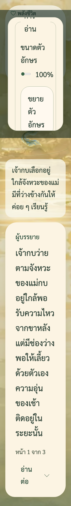
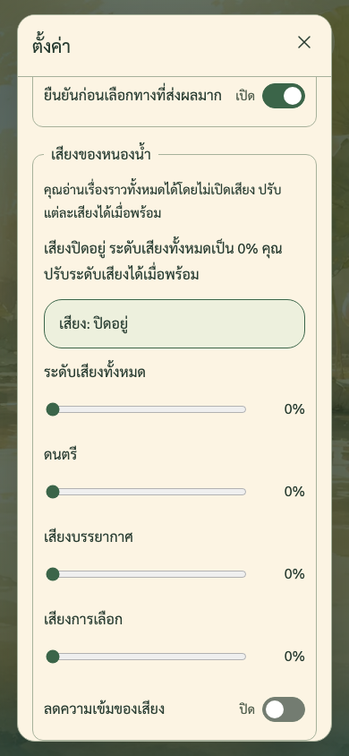
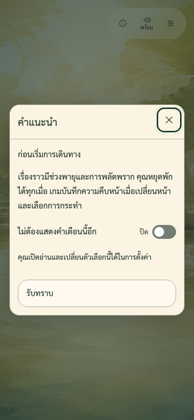

เจ้ากบ: ภาพปรับปรุงตาม ADR-P0-018
สลับ “บทอ่าน” กับ “จุดตัดสินใจ” เพื่อดูตำแหน่งกระดาษ ช่องตัวเลือกอยู่เหนือกระดาษที่ยึดขอบล่าง 24px ภาพทั้งหมดมาจากเกมจริง ไม่มีการแต่งภาพหลักฐาน


Desktop: Reading และ Decision ใช้กระดาษ y=620px สูง 256px เท่ากัน
ตำแหน่งที่วัดจาก DOM จริง
| Viewport | Reading y / สูง | Decision y / สูง | Layout Shift รวมหลังคลิก |
|---|---|---|---|
| 320 × 568 | 288 / 256px | 288 / 256px | 0 |
| 390 × 844 | 564 / 256px | 564 / 256px | 0 |
| 768 × 1024 | 744 / 256px | 744 / 256px | 0 |
| 1440 × 900 | 620 / 256px | 620 / 256px | 0 |
| 2560 × 1440 | 1160 / 256px | 1160 / 256px | 0 |
| 844 × 390 | 174 / 192px | 174 / 192px | 0 |
อย่างน้อย 26 ตัวอย่างต่อขนาดจอ รวม Reading, Exploration, Decision และการกลับไปอ่าน เก็บทั้ง geometry และ PerformanceObserver รวม hadRecentInput ดู ค่าที่วัดและ source hashes ตัวอักษร 200% ใช้การเลื่อนแนวตั้งเพื่อให้ข้อความและตัวเลือกเข้าถึงได้
Settings ที่ 320px และข้อความ 200%



Before เก็บภาพเต็มเอกสารตาม runner เดิม ส่วนภาพ modal ใหม่เก็บเฉพาะ viewport ให้เห็นขอบจอและปุ่มปิดจริง
สวิตช์ สถานะเสียง และคำเตือน





Unit 712/712 · เส้นทางเดิม 12/12 · ภาพใหม่ 36 ภาพ · ยังรอ PO ตรวจภาพ ภาษาไทย อุปกรณ์จริงและโปรแกรมอ่านหน้าจอ
หลักฐานและวิธีทดสอบ · Before 093595d และ hashes · ภาพรอบแรก f91ef05 · เปิดเกมพรีวิว